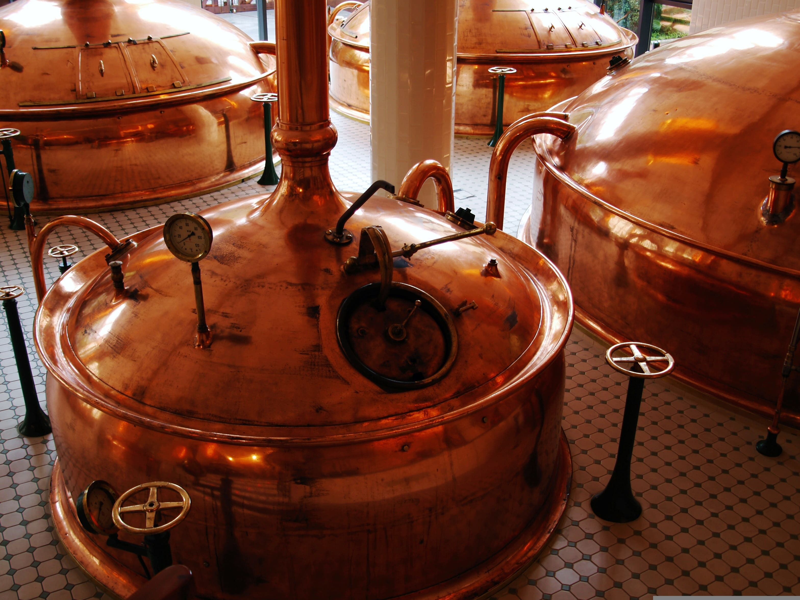
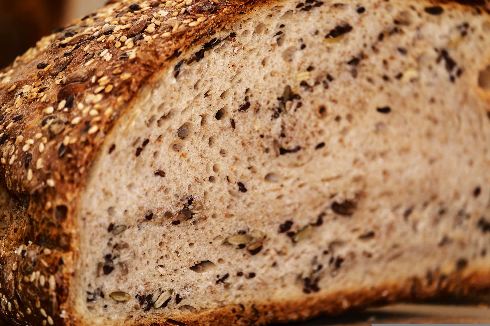
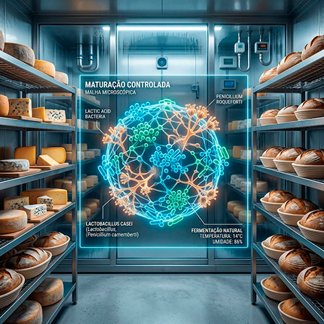
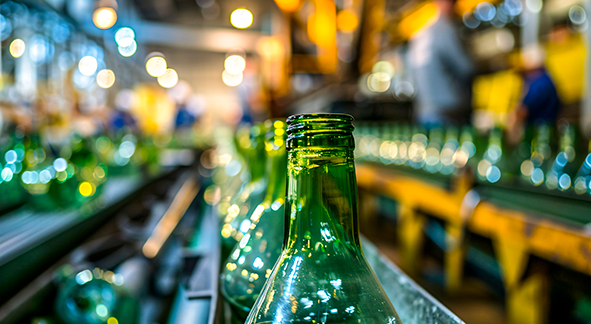
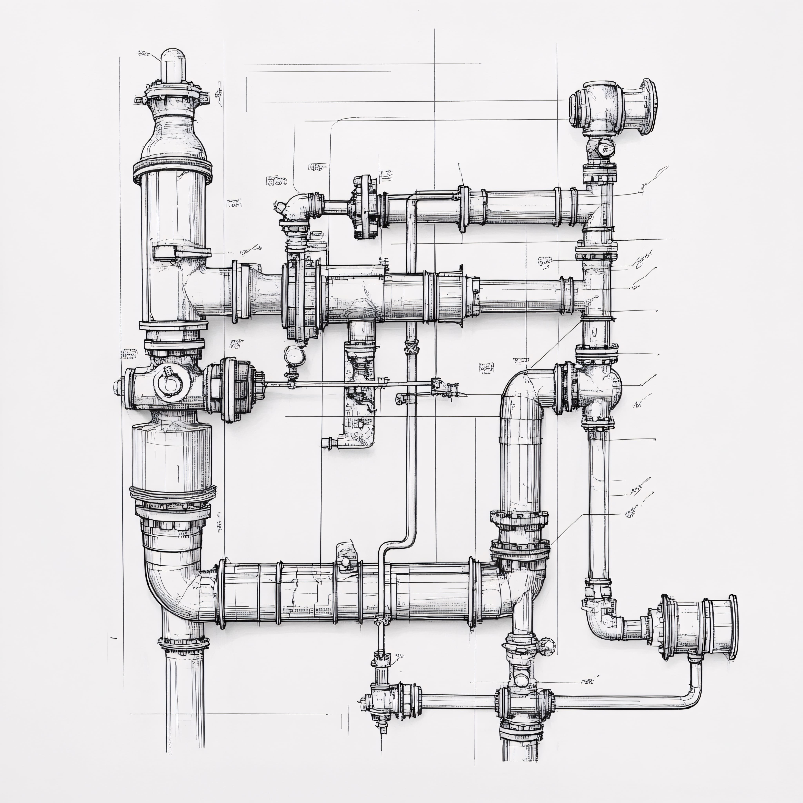
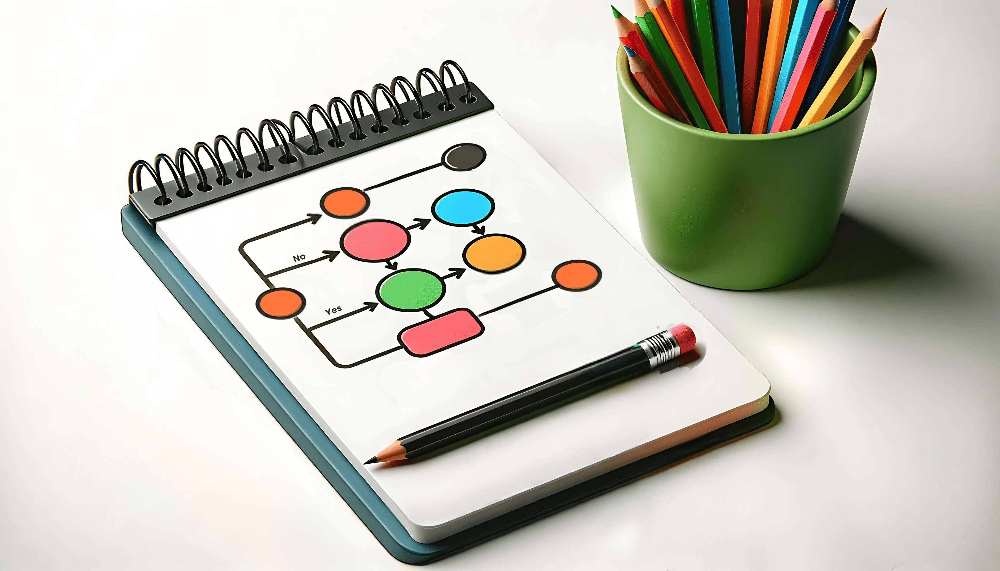
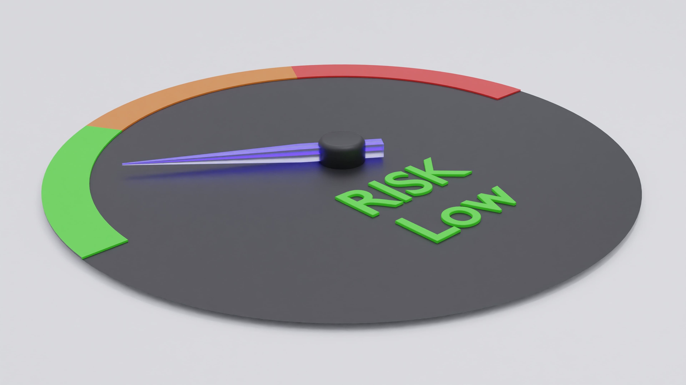

Bem-vindo à TekPrax
Engenharia Biotecnológica para Indústrias e Empresas
A TekPrax oferece consultoria em Engenharia Biotecnológica para empresas que buscam conformidade regulatória, otimização de processos, controle de qualidade e desenvolvimento de soluções técnicas. Atuamos com base em critérios científicos, normas técnicas e práticas de engenharia para promover maior eficiência, segurança e confiabilidade operacional.
Conheça nossos serviçosSobre o Engenheiro
Engenharia aplicada à inovação e ao desenvolvimento industrial
Minha atuação integra conhecimentos em Engenharia Biotecnológica, pesquisa científica e aplicação industrial. Desenvolvo soluções para otimização de processos, análise de dados, modelagem matemática, valorização de resíduos, controle microbiológico e adequação regulatória, sempre considerando as necessidades técnicas de cada projeto.
O objetivo é oferecer suporte especializado para aumentar a eficiência dos processos, atender às exigências legais e contribuir para a tomada de decisões fundamentadas em dados.
Contato DiretoCatálogo de Serviços
Soluções técnicas para diferentes setores
Selecione uma das áreas abaixo para conhecer os serviços disponíveis.
Contato
Solicite uma proposta
Credenciais Ver perfil ➔
Mike Jonathan dos Santos Brito
Engenheiro Biotecnológico
CREA-SP: 5071801530
RNP: 2623892040
Base operacional: Presidente Prudente - SP
Atendimento remoto em
todo o Brasil.
Adequação Regulatória
Suporte técnico para conformidade legal
Auxiliamos empresas na implementação de documentos, procedimentos e requisitos técnicos necessários para atender à legislação vigente e às normas aplicáveis ao setor.
Responsabilidade Técnica (ART)
Plano de Gerenciamento de Resíduos Sólido (PGRS)
Boas Práticas de Fabricação (BPF)
Perícia e Assistência Técnica
Otimização de Bioprocessos
Melhoria do desempenho produtivo
Desenvolvemos soluções para aumentar a estabilidade dos processos, reduzir perdas, padronizar a produção e melhorar o controle das etapas industriais.
Previsibilidade de produção
Bebidas fermentadas
Panificação
Maturação de laticínios
Controle microbiológico
Valorização de resíduos
Soluções Digitais e Dados
Tecnologia aplicada à engenharia
Utilizamos ferramentas computacionais para análise de dados, modelagem matemática e desenvolvimento de aplicações voltadas ao ambiente industrial e empresarial.
Modelagem matemática e estatística
Desenvolvimento de sites e sistemas
Engenharia de Processos
Suporte técnico para projeto e otimização
Oferecemos suporte especializado para o desenvolvimento, análise e otimização de sistemas industriais, com foco em desempenho operacional, segurança, confiabilidade e conformidade técnica.
Projeto e Dimensionamento
Fluxogramas e Instrumentação
Controle e Avaliação de Riscos
Responsabilidade Técnica (ART)
Acompanhamento técnico conforme a legislação
A Anotação de Responsabilidade Técnica (ART) formaliza a atuação do engenheiro em atividades técnicas, conforme a legislação profissional.
- Emissão de ART.
- Responsabilidade técnica perante o CREA.
- Apoio em processos de regularização.
- Suporte técnico para atividades de engenharia.
Plano de Gerenciamento de Resíduos Sólidos (PGRS)
Gestão adequada dos resíduos
Elaboramos Planos de Gerenciamento de Resíduos Sólidos de acordo com a legislação ambiental e as características de cada empreendimento.
- Diagnóstico da geração de resíduos.
- Definição dos procedimentos de segregação.
- Destinação ambientalmente adequada.
- Atendimento às exigências legais.
Boas Práticas de Fabricação (BPF)
Organização e padronização dos processos
Desenvolvemos documentos e procedimentos voltados ao controle da qualidade e à organização dos processos produtivos.
- Manual de Boas Práticas de Fabricação.
- Procedimentos Operacionais Padronizados (POPs).
- Registros e formulários de controle.
- Sistemas de rastreabilidade.
Perícia e Assistência Técnica
Análise técnica especializada
Prestamos serviços de perícia e assistência técnica em processos judiciais e administrativos que envolvam aspectos relacionados à Engenharia Biotecnológica.
- Elaboração de pareceres técnicos.
- Assistência técnica em processos.
- Formulação de quesitos.
- Análise de documentos e laudos.
Previsibilidade de Produção
Controle e padronização dos processos
Aplicamos ferramentas de engenharia para compreender o comportamento dos processos produtivos, reduzir variações e apoiar a padronização das operações.
As análises incluem avaliação de parâmetros físico-químicos, acompanhamento de processos e interpretação de dados para subsidiar decisões técnicas.
Bebidas Fermentadas
Desenvolvimento e controle do processo fermentativo
Oferecemos suporte técnico para produção de cervejas, hidromel e outras bebidas fermentadas, considerando parâmetros microbiológicos, físico-químicos e operacionais.
- Correção de mosto.
- Manejo de leveduras.
- Controle da fermentação.
- Padronização do processo produtivo.

Panificação e Fermentação
Engenharia aplicada aos processos fermentativos
Desenvolvemos soluções para fermentação natural e industrial, com foco na estabilidade dos processos e na padronização da produção.
- Controle da fermentação.
- Avaliação das características da massa.
- Ajuste de parâmetros operacionais.
- Adequação das condições de fermentação.

Maturação de Laticínios
Controle das condições de maturação
Realizamos o acompanhamento de variáveis que influenciam a qualidade de queijos e outros produtos maturados.
- Controle de temperatura e umidade.
- Monitoramento microbiológico.
- Avaliação do processo de maturação.
- Análise de parâmetros de qualidade.

Controle Microbiológico
Monitoramento e prevenção de contaminações
Desenvolvemos estratégias de controle microbiológico para apoiar a segurança dos processos produtivos e a conservação dos produtos.
- Avaliação de riscos microbiológicos.
- Identificação de pontos críticos.
- Estratégias de conservação.
- Apoio ao aumento da vida útil dos produtos.

Valorização de Resíduos
Aproveitamento de subprodutos industriais
Desenvolvemos estudos para o aproveitamento de resíduos industriais por meio de processos biotecnológicos, contribuindo para a economia circular e o uso mais eficiente dos recursos.
- Avaliação de matérias-primas.
- Desenvolvimento de rotas de aproveitamento.
- Produção de biomateriais.
- Estudos de viabilidade técnica.
Modelagem Matemática e Dados
Análise quantitativa para apoio à decisão
Aplicamos métodos estatísticos e matemáticos para interpretação de dados experimentais, otimização de processos e desenvolvimento de modelos computacionais.
- Análise estatística.
- Modelagem matemática.
- Simulação de processos.
- Desenvolvimento de rotinas computacionais.
Programação e Desenvolvimento de Sites
Soluções digitais para empresas
Desenvolvemos websites, sistemas e aplicações web com foco em desempenho, usabilidade e adaptação aos diferentes dispositivos.
- Sites institucionais.
- Landing pages.
- Sistemas web.
- Interfaces responsivas.
- Otimização para mecanismos de busca (SEO).

Projeto e Dimensionamento
Desenvolvimento de processos industriais
Atuamos no desenvolvimento e dimensionamento de equipamentos e sistemas, visando a eficiência e segurança operacional das indústrias.
- Desenvolvimento de projetos de processos industriais.
- Dimensionamento de equipamentos de processo (bombas, trocadores de calor, vasos de pressão e equipamentos industriais).
- Dimensionamento de válvulas de controle e válvulas de segurança (PSVs).
- Dimensionamento hidráulico e projetos de tubulações industriais.
- Desenvolvimento de soluções personalizadas para demandas específicas.

Fluxogramas e Instrumentação
Especificação técnica e documentação
Elaboramos a documentação técnica e definimos a instrumentação necessária para o monitoramento e controle adequado dos processos.
- Elaboração de fluxogramas de processo, croquis e documentação de engenharia.
- Especificação e dimensionamento de instrumentos de medição e controle (temperatura, pressão, vazão, nível e demais variáveis de processo).

Controle e Avaliação de Riscos
Análise técnica e segurança operacional
Aplicamos análises detalhadas para identificar riscos e garantir a estabilidade e segurança das operações industriais.
- Estudos e avaliações de riscos de processo.
- Aplicação de softwares e ferramentas de engenharia para simulação, cálculo e análise técnica.

Solicite um Orçamento
Desenvolvimento de projetos digitais
Informe as características do seu projeto para que possamos elaborar uma proposta adequada às suas necessidades.
Metodologia Web
Os projetos são desenvolvidos considerando planejamento, desempenho, compatibilidade com diferentes dispositivos e boas práticas de desenvolvimento.